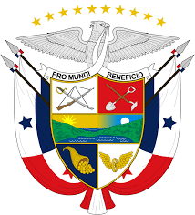
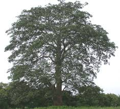

Panamá
Breve historia de Panamá
La historia de Panamá ha sido ampliamente influenciada por la posición estratégica
de este istmo estrecho que une América del Norte con América del Sur y que separa el océano
Pacífico del océano Atlántico. Los Cunas, los Chocos y los Guaymis fueron algunas de las tribus
indígenas que han ocupado la región. Aún cuando estas civilizaciones no fueron tan avanzadas
como la de los Mayas o los Incas, puede que hayan sufrido la influencia de ellas. El explorador
Rodrigo de Bastidas desembarcó sobre el territorio en 1501 y, al año siguiente, Cristóbal Colón
reivindicó Panamá en nombre de España.
Panamá sirvió de base para el transporte marítimo de los minerales, metales preciosos
y tesoros provenientes del Perú y encaminados hacia España por un eje que atravezaba el país de
un océano al otro, de Panamá al puerto de Nombre de Dios, sobre el Atlántico.
Dependiente del virreinato del Perú, Panamá fue integrada a la Nueva Granada a comienzos del siglo XVII y permaneció
bajo dominación española hasta 1821. La Nueva Granada fue entonces unida a la República de la
Gran Colombia, creada bajo el arbitrio de Simón Bolívar. En 1826, Bolívar reunió a los gobernantes
con ellos la unidad del continente sudamericano. Murió, sin embargo, en 1830, antes de haber consolidado
esta unificación.
Símbolos Patrios
Escudo
 Bandera

Árbol Nacional

Flor Nacional
Ave Nacional
Lugares Turísticos
Archipiélago de San Blas
Canal de Panamá
Boca del Toro
Extensión Territorial
tiene una extensión de 75420 km².1 Localizado en el istmo de mismo nombre, franja que une a América del Sur con América Central.
Departamentos
- Bocas del Toro
- Coclé
- Colón
- Chiriquí
- Darién
- Herrera
- Los Santos
- Panamá
- Veraguas
- Panamá Oeste